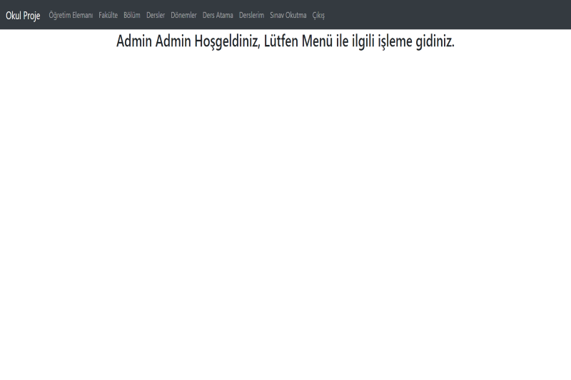

1 / 3 Uçan Taksi Dönemi Başlıyor! İlk deneme uçuşu Singapur’da gerçekleştirildi. 2 / 3 Bilim İnsanları, Bilimsel Amaçlar İçin Farelere Araba Kullanmayı Öğretti! 3 / 3  ASP.NET MVC ile geliştirdiğim proje! ❮ ❯